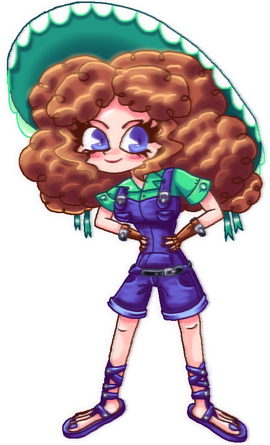
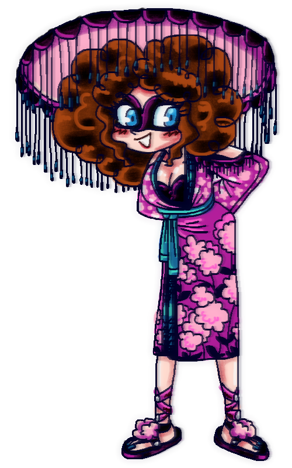

Гортензія, або Аджісаі Мурасакі - вигадана 18-річна дівчина, відома як одна з найкрасивіших свого всесвіту.
Гортензія відома своєю рідкісною привабливістю. Вона має густе рудувате кучеряве волосся, великі блакитні очі з великими віями, маленький гоструватий ніс та середній рот із червоною помадою. Гортензія струнка, має дуже красиву ніжну фігуру, типову для ідеалізованого жіночого персонажа: гладенька худа талія, великий бюст, широкі стегна. Нігті на ногах та руках мають синій лак. Шкіра біленька, щічки червоні з рум'янцем.
Гортензія успадкувала від своєї матері, Дарини, любов до великих капелюхів. Її капелюх зелений із денцем також кольору. Зачіска має два пишні хвостики, на кожному зав'язаний зелений бантик із довгими стрічками. Гортензія одягнена у зелену сорочку з короткими рукавами на ґудзиках, із джинсовим комбінезоном поверх неї. На грудях кишені на ґудзиках, внизу - кишені-тунель як у худі, штанки короткі як у шортів, мають кишені по бокам. Ремінь на талії чорний.
Ноги без шкарпеток, одягнені в джинсові сандалі з перехрещеними стрічками, скріпленими ґудзиками, аж до литок. На руках шкіряні рукавиці до ліктів з отворами для пальців, мають чорні маленькі ремінці.
Гортензія, перш за все, це дуже грайлива і зваблива дівчина. Вона любить фліртувати з хлопцями, але насправді це робить жартома, бо знає собі велику ціну і вважає багатьох хлопців недостойними себе. Тому її дуже важко здивувати чи привабити. Гортензія, попри свою гордість, дуже добра, ніжна й вихована, навіть якщо її співрозмовник - неадекват. Вона ввічливо відмовляє хлопцям, яких привабила, або для задоволення грається з їх почуттями, але не дозволяє собі маніпулювати ними. Гортензія вміє себе захистити, хоч і здається ніжною. Вона мріє про хлопця, що любив би її сильною, гордою жінкою, а не дивився на неї як на слабке беззахисне створіння. Це й причина, чому вона прискіплива до хлопців.
Попри великий розмір грудей, Гортензія не носить одягу з декольте. Вона як дівчина, що поважає себе, вважає це непристойним зі свого боку.
Вона стає грубішою лише тоді, коли хтось порушує її особисті кордони або навіть починає застосовувати до неї силу - вона не дозволяє себе торкатися, навіть обіймати. Тоді вона зозла може сильно вдарити кулаком або ногою, гордовито огризаючись нападникові. Навіть якщо її випадково зачепити, їй це дуже не сподобається, але вона намагатиметься пробачити. Однак вона нейтральна до словесних образ, навіть дуже болючих, реагуючи ввічливо з радісним обличчям.
Але Гортензія дуже відкрита, навіть фізично, для дітей. Вона їх дуже любить. Вона дозволяє їм себе обіймати, цілувати, навіть гратися її пишнючим волоссям. Гортензію дуже люблять діти: хлоп'ята люблять казати їй компліменти, а дівчата мріють бути такими, як вона. Цікаво, що вона дуже тактильна саме з малими хлопцями, хоча і вчить їх поважати кордони дівчаток. Багато дітей навіть називають її своєю "другою мамою", а вона у відповідь жартує, що усе селище тепер стало її "великою сім'єю". Вона грається з ними, гуляє на природі, купається і вчить різним корисностям. Буває так, що вони вечорами лежать просто неба і дивляться на зірки. Дуже мило.
Гортензія дуже відповідальна, коли з дітьми. Вона ніколи не кидає їх у біді, навіть ладна на самопожертву, хоча й кличе на допомогу сторонніх, якщо знає, що справитися не зможе, але так буває рідко.
Гортензія має японське коріння. Це посилає на квіти гортензії, які дуже поширені в Японії. Її японське ім'я - Аджісаі, це все та ж "гортензія". Його їй дав тато, японець за походженням. Гортензія від прабабці-японки має пурпурове кімоно та набір для макіяжу. Вона любить одягатися як ґейша, тому що вважає себе дуже привабливою в цьому образі. Через змішану сім'ю трохи знає японську, має навіть звичку "рикати" у словах, де є літера "л", а то й кумедно шепелявить.

Гортензія у своєму кімоно. Доволі старий малюнок: можете помітити, що одяг суперечить її персонажу, тому що має декольте.